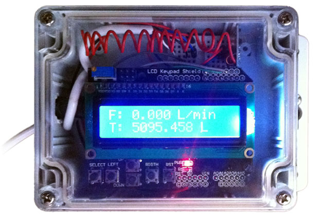
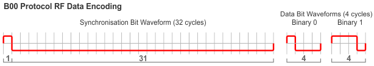
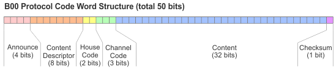
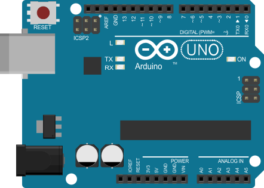
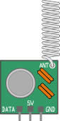
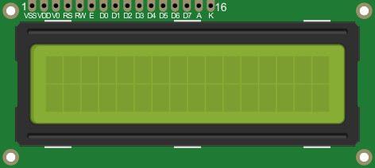
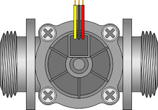
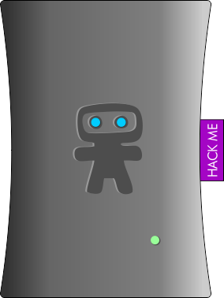
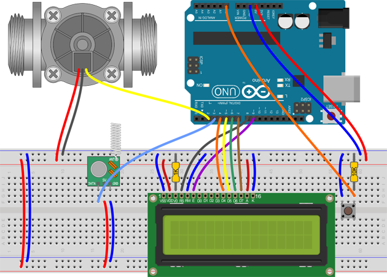

The Project
The goal of this project is to build a water flow sensor that can monitor instantaneous water flow rate and calculate total water consumption and transmit that data wirelessly to a Ninja Block for display within the Ninja Cloud Dashboard.
We're also going to use an LCD display to show the flow rate and consumption.
We'll also want to be able to retain the total usage when the hardware is powered down and be able to reset the total water consumption value at any time by pressing and holding a hardware button.
You can put together the final unit however you like, to suit whatever environment it needs to operate within. Here's one option showing the completed flow sender Arduino, display and transmitter encased with a clear front to keep it safe from the weather:

The Challenge
The most difficult part of this project is finding a way to wirelessly send the data from the flow sensor to the Ninja Block in a format that can be interpreted and displayed on the dashboard.
Both the standard and rewrite branches of the Ninja Blocks Arduino firmware only support a limited number of RF data encoding protocols. Unfortunately, none of those supported are suitable for our needs, so we have no option but to create a tailored version of the firmware that will decode our protocol and send the decoded data to the dashboard. One of the primary driving factors in the design of our protocol is the need to minimise the changes required to the existing Ninja Blocks Arduino firmware source code.
Most Arduinos have less than 32K of available Flash Memory. This is where the program is stored. Unfortunately, the standard Ninja Blocks Arduino firmware (the master branch) uses up almost all of that space leaving precious little for adding new protocols. This 'original' version of the firmware was written using a lot of third party 'libraries' to allow it to do all the things it needs to do. Using existing libraries means the code is generic and usually robust as it has been tried and tested elsewhere. It's also great for rapid development, but the downside is it's usually bigger. This meant that the tiny amount of memory available inside the Arduino was pretty much all used up, so a while back the Ninja Blocks team essentially rewrote the whole Arduino firmware, culling out a heap of unnecessary code, optimising things and basically making the code base smaller and easier to work with and extend. This is called the 'rewrite' branch. You'll find both the standard master and rewrite branches available at the Ninja Blocks GitHub repository here:
https://github.com/ninjablocks/arduino
If you're planning on working with the Arduino code, there are pros and cons of each of the Ninja Blocks Arduino branches. If possible, I'd recommend using the rewrite branch as it splits out each of the supported encoders and decoders into separate files and is much easier to understand. It also is small enough that additional space will be available for your own code. As far as I can determine, the main downside of the rewrite branch is that it sends data between the Arduino and the Ninja Block back-end slightly differently to the master branch meaning the content of the sensor data must be 'interpreted' into it's actual data format at the Ninja Cloud rather than in the Ninja Block itself.
For this project, we'll only be using the master branch of the Ninja Blocks Arduino firmware as that is what every Ninja Block will have by default. I'll also provide a link to a modified rewrite firmware that handles reception of the sensor data, however using this branch will require additional work within the Ninja Blocks Dashboard to interpret and display the data.
Building a Protocol - Design Decisions
There were several key factors to consider when designing the communication protocol between the Arduino based sensor and the Ninja Block. The protocol must:
- require minimal changes to the Ninja Block Arduino firmware
- be extensible and support a data payload appropriate for a wide variety of sensors
- also be able to send and receive sensor data between Arduinos
- be compatible with the Arduino RCSwitch library, but not be dependent on it
- be easy to detect and identify valid protocol packets
- be able to identify corrupt packets using a parity bit
- support user defined packet repetition counts
- support user defined house and channel codes in case multiple sensors are in use
From all of these requirements, the B00 protocol was born. It's a custom, general purpose protocol for sending sensor data of various data types via RF between Arduinos as well as a Ninja Block using the custom Ninja Block Arduino firmware.
It's called B00 as it says Boo! to announce itself.
Encoding
The RF encoding scheme used by the B00 protocol is a reasonably 'standard' type that can represent three possible 'signals': a sync, a binary zero and a binary one. Each of these three possible signals is made up of a pair of high and low pulse durations of different lengths like this:

The sync triggers the receiver to detect an incoming packet. It is made up of a short high followed by a very long low. Following the sync (or trigger) is the binary data where zero is represented as short high followed by long low and one is represented as long high followed by short low.
The short pulse is one cycle long and is one quarter of the full bit duration. The long pulse is three cycles long or three quarters of the full bit duration. The actual pulse durations are derived from the cycle length which is 300 microseconds. The long pulse length is 3 times the length of the short pulse (900 microseconds). The sync pulse length is 31 times the length of the short pulse length (9.3 milliseconds).
This gives us pulse durations of
- 9.3 ms sync pulse
- 0.9 ms long pulse
- 0.3 ms short pulse
The B00 RF protocol encoding adheres to the system defined as 'Protocol 1' in the commonly used Arduino RCSwitch library.
B00 Code Word
Aside from the limited remaining memory, the Ninja Blocks Arduino master branch has a limit of 104 'changes' in the RF signal state. Most RF protocols need two state changes to represent one 'bit' of data so that gives us a maximum of 52 bits.
The B00 protocol is designed to fit into this constraint so it has a length of 50 bits plus a leading and trailing sync bit. The 50 bit B00 code word (sometimes referred to as a packet) is constructed like this:
- 12 bits: B00 to announce and content descriptor
- 5 bits: 2 bit house code plus 3 bit channel code
- 32 bits: content
- 1 bit: even parity

Even though the B00 encoding is compatible with 'protocol 1' of the RCSwitch library, the base version of RCSwitch can't be used as it only supports up to 32 bit packets. If you intend using RCSwitch to decode the B00 packet, be sure to use the modified version which supports up to 64 bit packets. It can be found here:
https://github.com/GraemeWieden/RCSwitch_64
The 433 MHz frequency can be quite a busy slice of the RF spectrum, with more and more household things using it, and since each transmitting device doesn't know what else is also transmitting at the same time, sometimes transmissions can stomp all over each other. For this reason, the entire code word is repeated four times with each transmission to give it a better chance of being received properly. The repeat count can be changed if necessary, but four repeats should be fine.
Content Descriptor and Data Types
The B00 protocol is designed to be extensible such that additional content payloads can be supported in future. The content descriptor bits identify the type of data contained in the code word.
At present, the content descriptor defines these content types:
- B00 : 32 bit double precision floating point value
- B01 : 32 bit signed long integer value
- B02 : 32 bit unsigned long integer value
- B03 : 2 x 16 bit signed integer values
- B04 : 2 x 16 bit unsigned integer values
- B05 : 4 x 8 bit byte values
The B00 content type carries a double precision floating point value which can range from -3.4028235E+38 to 3.4028235E+38 but it only has a maximum of 6 to 7 decimal digits of precision.
The B01 content type carries a long integer value which can range from -2,147,483,648 to 2,147,483,647.
The B02 content type carries an unsigned long integer value which can range from 0 to 4,294,967,295.
The B03 content type carries two integer values each of which can range from -32,768 to 32,767.
The B04 content type carries two unsigned integer values each of which can range from 0 to 65,535.
The B05 content type carries four byte values each of which can range from 0 to 255.
The content type you use will be dependent on the type of data you're working with. For this project, we could wrap up the flow rate (in millilitres per minute) and total usage (in litres) into a single B04 transmission, but to give us more precision and a larger maximum consumption, we're going to use two separate transmissions, a B00 floating point transmission to carry the current flow rate and a B02 unsigned long integer to carry the total consumption.
Other B00 Protocol Features
As well as the content descriptor and the content itself, the B00 Protocol code word also includes a 2 bit house code (0 to 3) and a 3 bit channel code (0 to 7) allowing you to support up to 32 sets of sensors.
The final bit of the B00 code word is an even parity bit to assist in ensuring data integrity.
Transmission Frequency
Technically, you could use any frequency transmitter to send the sensor data, however for this project, we'll be using 433 MHz RF as that's what the Ninja Block uses.
The Hardware
Arduino
You can use most Arduino boards for this project, however one of the ATmega328 boards would be ideal. I'm using an Arduino UNO here as the physical size of the board isn't so critical when we're including the large LCD display, but a Nano would be great for a compact (and less expensive) version if you don't need the display component.

433 MHz Transmitter
You'll need a 433 MHz RF transmitter for sending the sensor data to the Ninja Block. These little units are only a few dollars.

To get the best range out of the transmitter, you'll need to add an antenna if it doesn't already have one. The antenna should be 17.3 cm long. If you're wondering where that figure comes from, the formula is reasonably simple. The exact frequency of these transmitters is 433.92 MHz (433920000 cycles per second) so at (close to) the speed of light (299792458 metres per second) each cycle is:
1 / 433920000 * 299792458 = 0.69 metres or 69 cm
We use one quarter of the wavelength which works out to 17.3 cm.
You can coil up the antenna however you'll get a better transmission range if it is left extended.
LCD Display (Optional Keypad / Push Button)
Although not essential, the flow sender can support an LCD display to show the current flow rate and the total consumption. We're also going to include a function to reset the total consumption by pressing and holding a button. The cheapest option to allow this is to use a 16x2 LCD module and a push button, however you can also use a commonly available LCD shield that has a number of push buttons already built into it.

Hall Effect Flow Sensor
The key to making this project work is the hall effect flow sensor. These are available from just a few dollars and they come in a variety of sizes. You'll need to choose one that is suitable for your needs that can be fitted into your plumbing at the point where you want to measure the flow.
If you're intending to use the project to measure anything larger than typical domestic garden water usage, be sure you check the specs of the sensor to make sure it can cope with the maximum flow capacity that you'll need.

Ninja Block
One of the primary goals when developing the B00 protocol was to ensure it could talk to the Ninja Block with minimal changes required, and even though it's ideal for communicating via RF between Arduinos, for this project, we'll be sending the sensor data to a Ninja Block with a slightly modified Arduino firmware.

Putting It All Together
The bulk of the wiring for this project is between the LCD display and the Arduino. If you're using an LCD shield, you won't need to worry about the LCD display and the additional push button, the display shield should just drop into place. Do be sure to double check that your LCD shield matches the pinouts that we're using here or you'll have to make changes in the code later to suit.

Wiring details are as follows:
Flow Sensor:
Red to +5V
Black to ground
Yellow to
Arduino digital pin 2
Although not necessary, you can also include a 1K current limiting resistor between the flow sensor's data lead and digital pin 2 on the Arduino.
LCD Display:
VSS (LCD pin 1) to ground
VDD (LCD pin 2) to +5V
V0 (LCD pin 3) to ground via 1K resistor (you may need to adjust for your display's contrast)
RS (LCD pin 4) to Arduino digital pin 8
RW (LCD pin 5) to ground
E (LCD pin 6) to Arduino digital pin 9
D4, D5, D6, D7 (LCD pins 11, 12, 13, 14) to Arduino digital pins 4, 5, 6, 7
A (LCD pin 15) to +5V via resistor if necessary - LCD backlight brightness
K (LCD pin 16) to ground
RF Transmitter
+5V to +5V
GND to ground
DATA to Arduino digital pin 3
Reset Button
Pin 1 to ground
Pin 2 to Arduino analog pin 0 using 10K pull up resistor
The Sender Sketch
Now that you have all the hardware hooked up, it's time to move on to the software that allows the sender Arduino to transmit the sensor data to the Ninja Block.
You'll find the latest version of the flow sender sketch in my GitHub repository here::
https://github.com/GraemeWieden/flow_sender
Download the source, create a flow_sender folder in your sketchbook folder and place the flow_sender.ino file into it.
If you're not sure where your sketchbook directory is located, you can find it by selecting 'Preferences' from the 'File' menu in the Arduino IDE.
Including the Libraries
The flow sender makes use of the B00 protocol library to allow it to send the sensor data to the Ninja Block. You'll need to download the B00 protocol library from my GitHub repository here:
https://github.com/GraemeWieden/B00_Protocol
Place (or symbolic link) the B00Sender directory into your Arduino libraries directory located within your Arduino sketchbook directory.
You'll see the B00Sender library is included at the top of the flow_sender.ino file along with the standard EEPROM library (for retaining the total consumption when the Arduino is powered down) and the LiquidCrystal library (for showing info on the LCD display):
#include <B00Sender.h>
#include <EEPROM.h>
#include <LiquidCrystal.h>Reading from the Sensor
The hall effect sensor sends pulses to the Arduino's digital pin 2 as liquid flows through it. The faster the flow, the more frequent the pulse. The flow sender sketch calculates the flow rate by monitoring the timing of the pulses. To do this, we attach an interrupt to the sensor pin and update a counter with each pulse:
pinMode(sensorPin, INPUT);
digitalWrite(sensorPin, HIGH);
attachInterrupt(sensorInterrupt, pulseCounter, FALLING);The Interrupt Service Routine (ISR) is called pulseCounter and is a function defined like this:
void pulseCounter()
{
sensorCount++;
}Note that the ISR should do as little as possible before returning as it will block other routines while it's running.
Each time the main loop is executed, we can calculate the flow rate (and hence the total consumption) by using the sensorCount value and the predefined calibrationFactor for the particular sensor.
flowRate = ((1000.0 / (millis() - lastPollTime)) * sensorCount) / calibrationFactor;Transmitting the Data
After the flow rate and total consumption has been calculated, we periodically transmit it, but only if the data has changed since the last transmission. There's no point in cluttering up the RF spectrum any more than we need to! This is where the B00 protocol comes in. There are a number of ways the data could be sent to the Ninja Block, but for this project, we're going to send two separate values; a floating point number for the current flow rate in litres per minute and an unsigned long integer for the total litres consumed. These values will be sent as a B00 and a B02 message respectively like this:
sender.sendB00(flowRate); // floating point flow rate in L/min
sender.sendB02(totalLitres); // unsigned long total value in litresStoring the Total Consumption Value
Power to the sensor could be interrupted at any time, so it's important for us to store the total consumption value in the Arduino's small amount of permanent EEPROM memory. Unfortunately, the EEPROM memory has a specified life of only 100,000 write/erase cycles, so we will need to be very careful about how often we write to it.
Every two minutes, we'll check if the total consumption has changed and if so, write it to the EEPROM memory using the storeFloat function.
Any time the Arduino is powered up, it'll re-load the totalLitres variable using the readFloat function.
Resetting the Total Consumption
Of course, we'll also need a way to reset the total consumption value back to zero. To provide this functionality, but prevent it from happening too easily, we'll wait for the reset button to be held for 5 seconds.
While the button is being held a message will be shown on the LCD display and another message confirming the reset after the 5 second period.
Setting the House and Channel Codes
If you plan on having multiple sensors all communicating with your Ninja Block, you can assign each of them a different house code and channel code to uniquely identify where the data is coming from in the Ninja Blocks dashboard. The house code can range from 0 to 3 and the channel from 0 to 7. The settings can be changed here:
// set the house and channel codes here
int houseCode = 0; // 0 to 3
int channelCode = 0; // 0 to 7Setting the Calibration Factor
Each flow sensor has its own characteristics. The one I'm using in this project was rated at 4 pulses per second at one litre per minute of flow, and after a few tests it worked out pretty close at 3.97. You should run your own tests at a high and low flow rate, average them out and adjust the value here:
float calibrationFactor = 4.0;Flashing the Arduino
The last step in completing the sensor part of this project is compiling and uploading the sketch to the Arduino. Double check all your connections, make sure the Arduino board and port are set correctly and hit the 'Upload' button in the Arduino IDE.
Testing the Sensor
After the sensor Arduino is flashed, you can check the sensor and connections are all working by gently blowing through the flow sensor. You'll hear the little wheel whizz around and if everything is set up correctly, the 'Flow' and 'Total' values shown on the LCD display should be updated every few seconds.
The Ninja Block Arduino Firmware
Once you're happy that you have the sensor/sender part of the project all working correctly, it's time to make the necessary modifications to the Ninja Block's internal Arduino so that it'll be capable of receiving the B00 protocol data and forwarding it to the Ninja Cloud dashboard.
Getting the Ninja Block Arduino Master B00 Branch
There are currently two 'standard' firmwares available for the Ninja Arduino; the 'master' branch and the 'rewrite' branch. The master branch is the firmware installed on the Ninja Arduino by default. For this project, we'll be using a slightly modified version of the master branch that supports the B00 protocol. You'll need to download this branch from my GitHub repository here:
https://github.com/GraemeWieden/nb_arduino_master/tree/B00
Making Room for it
Unfortunately, for the BeagleBone based Ninja Blocks, the standard master branch Arduino firmware is so large that it doesn't allow for any more features to be added without sacrificing some of the existing functionality. Because of this, I've chosen to cull out the hardware port code as I don't have anything physically connected to my BeagleBone based Ninja Block. This is done by just returning at the start of the doPort1, doPort2 and doPort3 functions in NinjaObjects.cpp in the NinjaObjects directory. If you'd prefer to keep this functionality, you could instead bypass one of the other RF protocols that you're not using such as doLacrosseTX3 or doLacrosseWS2355.
The B00 Protocol Handler
The new B00 protocol is added as 'protocol 6' and it is decoded the the doB00 function of NinjaObjects/NinjaObjects.cpp in the case of the BeagleBone based Ninja Blocks or in NinjaObjectsPi/NinjaPi.cpp in the case of the Raspberry Pi based Ninja Blocks.
Flashing the Ninja Block Arduino
It may seem a bit daunting at first to update the firmware on your Arduino however the Ninja Block guys have put together a comprehensive set of instructions on how to do it at this page:
http://shop.ninjablocks.com/blogs/how-to/8465455-compiling-the-ninja-blocks-arduino-firmware
These instruction refer to the standard firmware, so be sure to use the B00 firmware that you downloaded instead. Also note that the instructions shown may vary slightly depending on your operating system. Essentially the update process is as follows:
- Build the firmware image using the Arduino IDE into an
arduino.hexfile on your computer - Copy the file from your computer to your Ninja Block
- Run the
ninja_update_arduinotool to flash the Ninja Arduino
If everything has gone according to plan, you should see two new devices appear in your Ninja Cloud dashboard after the Ninja Block has been restarted and has successfully reconnected to the Ninja server.
Showing the Data on the Dashboard
blog comments powered by Disqus